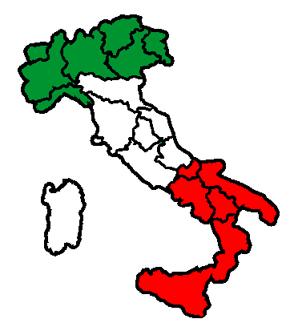

| Le lingue dell'Unione europea sono le lingue usate dagli abitanti degli Stati membri dell'Unione europea. Attualmente le lingue ufficiali dell'Unione europea sono 23, dal 1º gennaio 2007 si sono aggiunte il bulgaro, il rumeno e l'irlandese. Sulla pagina iniziale del sito dell'UE si afferma: "Lingue: la ricchezza dell'Europa" titolando una sezione particolare tutta dedicata a questo argomento. |
| italia  |
| Olanda |